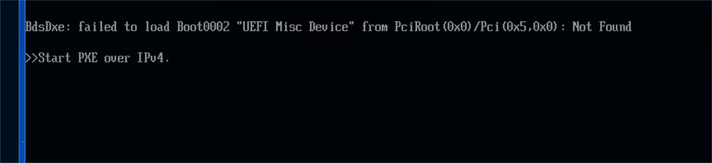
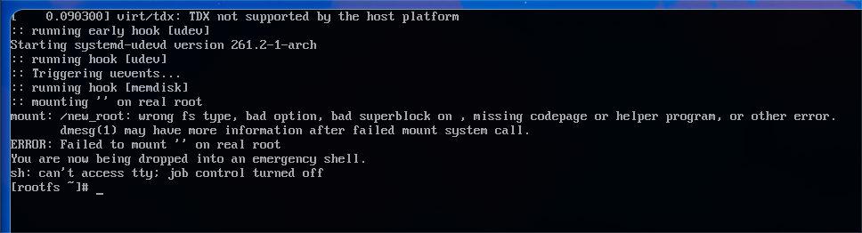
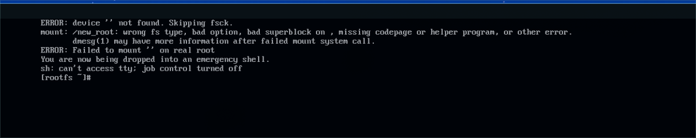

A crafted Hyprland experience with Caelestia Shell, dynamic Material You theming, full hardware acceleration, and an instant 30-second UKI offline installer.

Right-click any image or high-definition video in Thunar. Luminal Linux instantly applies it to your desktop and dynamically harmonizes your entire OS color scheme.
Play smooth MP4/WebM animated wallpapers in the background. Audio is muted automatically, and playback pauses when apps are focused to preserve 0% battery/CPU waste.
Caelestia CLI dynamically extracts complementary primary, surface, and container palettes from your wallpaper and updates GTK, Qt6, Kitty, and Caelestia Shell live.
Coming from macOS or prefer traditional Linux shortcuts? Toggle your entire system's modifier keys, terminal shortcuts, and Spotlight launcher with a single keystroke.
Press Super + F12 (or type macmode in terminal) to flip the hardware key daemon on the fly. No reboots or re-logins required.
On standard PC keyboards, the key physically adjacent to the Spacebar is Alt. Because macOS muscle memory relies on resting your thumb right beside the Spacebar for Cmd, keyd maps physical Alt → Cmd and physical Super (Windows key) → Option. No thumb contortions needed.
Maps clipboard (Cmd+C/V), Spotlight launcher (Cmd+Space), app quit (Cmd+Q), and word/line navigation across browsers, editors, and terminals.
Every element of Luminal Linux is engineered to give you a cohesive desktop with zero configuration fatigue.
Instant desktop rootfs cloning with systemd-boot Unified Kernel Images. Install the full system with zero internet requirement in under 30 seconds.
Wallpaper changes trigger Caelestia's Material You engine to extract complementary color palettes across GTK, Qt6, Kitty terminal, and Caelestia Shell.
Full VA-API / VDPAU video decode, PipeWire low-latency audio, Intel Iris Xe, AMD Radeon, and hybrid Nvidia Prime switching pre-configured.
Kitty terminal with native clipboard integration, Oh-My-Zsh with Powerlevel10k prompt, z-lua fast directory jumping, and Neovim.
Lightweight QML/QuickShell widgets providing modern control centers, audio visualizers, workspace indicators, and dynamic notch notifications.
Automated CI/CD pipelines track Arch Linux core updates and Caelestia releases weekly, baking verified rolling ISOs every Sunday.
Explore the subsystems powering the Luminal Linux desktop environment.
A tailored Wayland compositor environment configured for smooth animations, gesture navigation, and multi-monitor productivity.

Our dedicated rootfs installer formats your NVMe or SSD, rsync-clones the desktop filesystem, configures systemd-boot with Unified Kernel Images, and completes in ~30 seconds.
Set any static wallpaper or live video wallpaper from Thunar. The system extracts harmonious primary, surface, and container colors, applying them live across the entire OS.

Search shortcuts or browse essential keybindings for maximum speed.
Deploy to physical hardware or test safely in a virtual machine.
Download the official 2.9 GB ISO image accelerated globally via Cloudflare's Edge CDN.
Write the ISO to a USB thumb drive using dd or any flashing utility (BalenaEtcher, Rufus in DD mode):
Boot into UEFI live mode and select [1] Install Custom Arch Linux to Disk in the Welcome app.